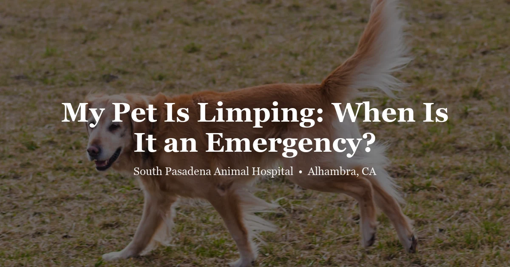

April 17, 2026 · 7 min read
My Pet Is Limping: What It Means and When It’s an Emergency

A limping pet is one of the most common reasons families call an animal hospital, and it spans a wide spectrum — from a tiny thorn in a paw pad to a broken bone to a neurological injury. Knowing which end of that spectrum you're looking at determines whether you're making an appointment for next week or heading to the clinic right now.
This guide covers the most common causes of limping in dogs and cats, how to do a basic at-home paw check, the signs that make limping an emergency, and what a veterinary orthopedic exam involves.
Common Reasons Pets Limp
Paw and Foot Problems
The most frequent cause of sudden limping — especially in dogs who have been outside — is something in the paw. Foxtail awns are a particular hazard in Southern California and the San Gabriel Valley; their barbed structure allows them to burrow deeply into paw pads, between toes, and even into tissues. Other common paw causes include:
- Cuts or lacerations to the paw pad
- Overgrown or broken nails
- Burns from hot pavement (especially in Alhambra summers — if the asphalt is too hot for your hand, it's too hot for paws)
- Interdigital cysts (fluid-filled lumps between toes, more common in dogs)
- Insect stings or bites causing localized swelling
Soft Tissue Injuries
Muscle strains, sprains, and ligament injuries are common in active dogs, particularly after vigorous play, jumping, or sudden directional changes. These often produce a sudden-onset limp that is mild to moderate and tends to improve with rest over a few days — but not always. Cranial cruciate ligament (CCL/ACL) rupture is one of the most common orthopedic injuries in dogs and typically causes sudden, significant lameness in a rear leg. It does not heal on its own and usually requires surgery.
Arthritis and Joint Disease
Osteoarthritis is extremely common in middle-aged and older dogs and cats. Unlike acute injuries, arthritis-related lameness is gradual — often first noticed as stiffness when rising after rest, reluctance to use stairs, or decreased activity. Cold weather can worsen signs. Cats with arthritis may simply stop jumping onto furniture rather than limp visibly.
Orthopedic Conditions
Certain breeds have higher rates of specific joint problems. Luxating patella (kneecap that slips out of place) is very common in small breeds like Pomeranians, Chihuahuas, and Yorkshire Terriers. Hip dysplasia affects many large breeds. Legg-Calvé-Perthes disease causes hip pain in small breed puppies and young dogs. These conditions can often be managed medically, though some require surgery.
Bone Fractures
A fracture causes immediate, severe, non-weight-bearing lameness. The pet will typically refuse to put the leg down at all and may vocalize with pain. This is always an emergency. Do not attempt to splint or bandage the limb at home — immobilize the pet gently, minimize movement, and get to the vet immediately.
Neurological Causes
Intervertebral disc disease (IVDD), spinal cord injury, or nerve damage can cause limping or weakness that may initially look like a simple limp. If the limb appears weak rather than painful — if the pet is knuckling over (walking on the top of the paw), dragging a leg, or has lost coordination — this suggests neurological involvement and requires urgent evaluation.
Sudden Limping vs. Gradual Onset: Why It Matters
Sudden, severe limping — especially non-weight-bearing — in a pet who was fine an hour ago suggests an acute injury: fracture, ligament rupture, joint dislocation, or something in the paw. These need prompt attention.
Gradual, progressive limping that develops over weeks or months more commonly reflects arthritis, a developmental joint condition, or — particularly in older large-breed dogs — potentially something more serious like a bone tumor. A gradual onset doesn't mean it's less serious; it means the cause is different.
Intermittent limping — where the pet limps for a while, then seems fine, then limps again — is characteristic of luxating patella and early cruciate ligament disease in dogs, and arthritis flares in cats. It still warrants evaluation even though it comes and goes.
Is the Limping an Emergency?
Head to the vet urgently (same day) if:
- The pet will not bear any weight on the leg at all
- You can see a wound, bone, or significant swelling
- The limb appears deformed or at an unusual angle
- The pet is in obvious pain — vocalizing, panting, refusing to be touched
- The limping is accompanied by other symptoms (vomiting, lethargy, difficulty breathing)
- The pet was hit by a car, fell from a height, or had another trauma event
- The leg appears numb, cold, or the pet is knuckling over (neurological signs)
A same-week appointment is appropriate for:
- Mild limping that does not worsen over 24–48 hours of rest
- Gradual-onset lameness in an older pet
- Intermittent limping that comes and goes
How to Check Your Pet's Paw at Home
If the limping started suddenly and appears to involve a front or rear foot, a careful paw examination can sometimes reveal an obvious cause. Do this gently — a pet in pain may bite even if they are normally gentle.
- Approach calmly. Have someone hold the pet still if possible.
- Look at each paw pad for cuts, redness, or foreign material.
- Gently spread the toes and look between them for foxtails, debris, or swelling.
- Check the nails — a broken nail at the quick is painful and visible.
- If you find something you can remove easily (a small splinter, debris), remove it. For anything embedded deeply, or if you're unsure, bring the pet in.
If the paw looks normal and the limping involves the upper leg, shoulder, or hip, do not attempt to manipulate the joint. These areas are harder to assess at home and may involve structures that worsen with incorrect handling.
Limping in Exotic Pets
Limping or lameness in exotic animals carries the same urgency as in dogs and cats but often has causes specific to the species.
Rabbits that stop hopping normally or drag a hind leg may have splayleg (a developmental condition), a spinal injury, or hind limb weakness from vitamin E/selenium deficiency. Any rabbit showing difficulty with rear limb movement should be evaluated promptly — rabbits can deteriorate quickly when in pain.
Guinea pigs are prone to vitamin C deficiency (scurvy), which causes joint pain and reluctance to move. Adequate dietary vitamin C is essential; supplementation alone does not prevent deficiency if the diet is poor. Arthritis also occurs in older guinea pigs.
Birds with foot problems often show bumblefoot (ulcerative pododermatitis) — red, swollen, or crusted foot pads, often caused by hard perch surfaces or vitamin A deficiency. Birds may also develop gout, which causes swollen, painful joints. Any bird that is reluctant to grip its perch or holds a foot up should be seen by a vet familiar with avian medicine.
Reptiles — especially bearded dragons, iguanas, and tortoises — are highly prone to metabolic bone disease (MBD) from insufficient UVB lighting and calcium. MBD causes soft, painful bones that fracture easily and deformed limbs. Limping or inability to bear weight in a reptile without proper UVB and calcium supplementation should be considered MBD until proven otherwise. Early intervention can prevent permanent deformity.
What the Vet Will Do
A veterinary exam for a limping pet begins with watching the animal move. The vet observes gait, weight distribution, and whether the limp is consistent or variable. A hands-on examination follows — palpating each joint for swelling, pain, and range of motion, and checking the spine and muscles for tenderness.
X-rays are frequently recommended to evaluate bone and joint structures. For many orthopedic conditions — fractures, hip dysplasia, arthritis, bone tumors — X-rays provide the information needed for a diagnosis and treatment plan. In some cases, joint fluid analysis (arthrocentesis) helps distinguish between infections, immune-mediated conditions, and degenerative disease.
Treatment depends entirely on the cause. Options range from rest and anti-inflammatory medications for mild sprains, to joint supplements and physical therapy for arthritis, to surgical repair for fractures and ligament injuries. The goal is always to address both the underlying cause and the pain — pets should not be expected to simply "live with" chronic orthopedic pain.
Frequently Asked Questions
My dog started limping suddenly with no obvious injury — what could have caused it?
Sudden limping without a visible wound often results from a soft-tissue injury such as a muscle strain or sprain, a thorn or foxtail in the paw, or a joint problem like a luxating patella or cruciate ligament tear. Arthritis can also cause sudden-seeming lameness after rest. A vet exam helps identify the cause.
Can I give my dog ibuprofen or aspirin for limping?
No. Ibuprofen and naproxen are toxic to dogs and cats and can cause GI bleeding, kidney failure, and death even at small doses. Aspirin can also cause GI ulcers in pets. Never give human pain medications to animals. Your vet can prescribe safe veterinary NSAIDs or other appropriate pain relief.
My dog is limping but still eating and playing — should I still see the vet?
Yes, ideally within a day or two if the limping persists. Pets often compensate well for pain and will play through mild to moderate discomfort. This does not mean the underlying problem is minor. Delaying care for a ligament tear or orthopedic injury can allow secondary changes that make treatment more difficult.
How do vets diagnose the cause of limping?
The vet will perform a thorough orthopedic and neurological exam, observing gait, palpating joints and muscles, and testing range of motion. X-rays are often taken to assess bones and joint spaces. Depending on findings, further diagnostics may include joint fluid analysis or referral for advanced imaging.
Can limping in pets be a sign of cancer?
Yes, though it is not the most common cause. Bone cancer (osteosarcoma) is more common in large and giant breed dogs and often presents as progressive limping in a limb, sometimes with visible swelling. X-rays can raise suspicion, and further diagnostics confirm the diagnosis. Any painful, swollen limb in a large older dog warrants prompt evaluation at spah.la/contact.